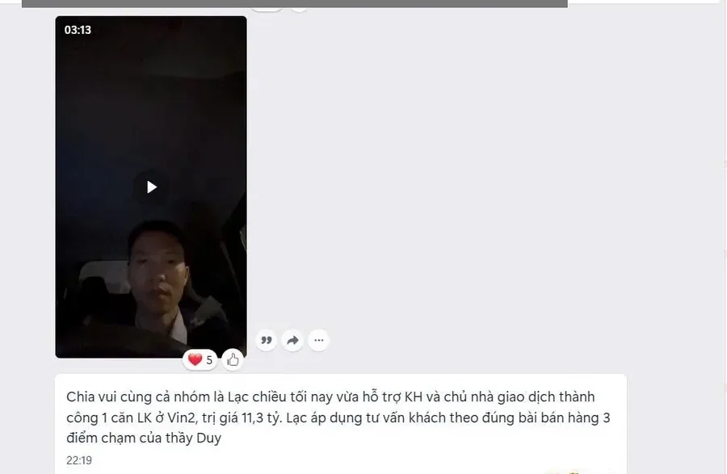
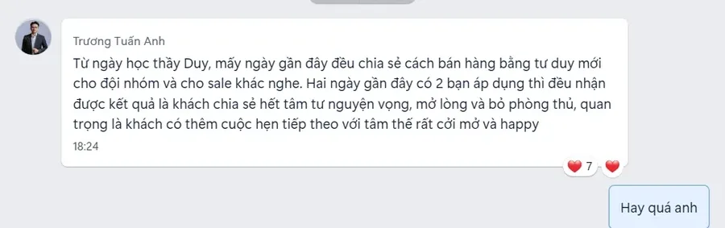
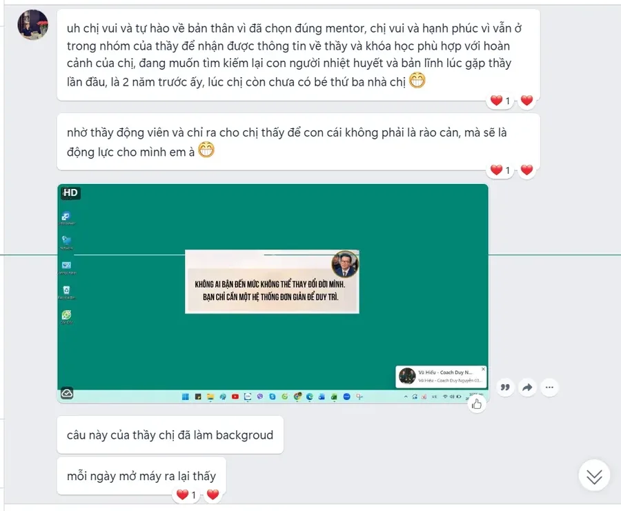
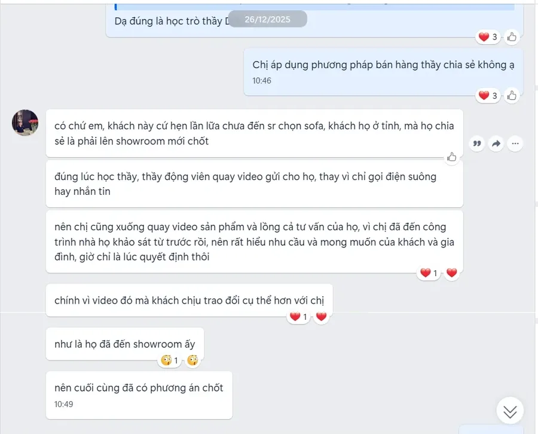
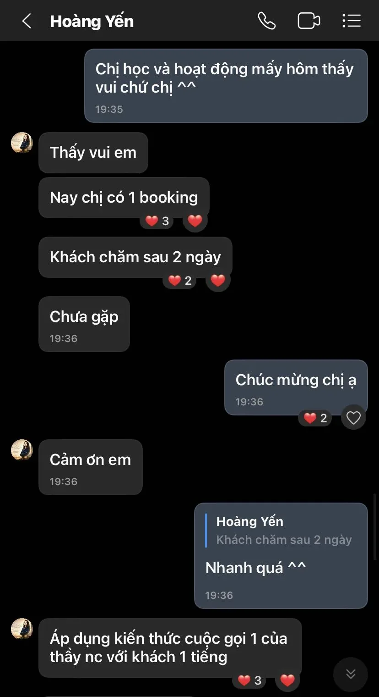
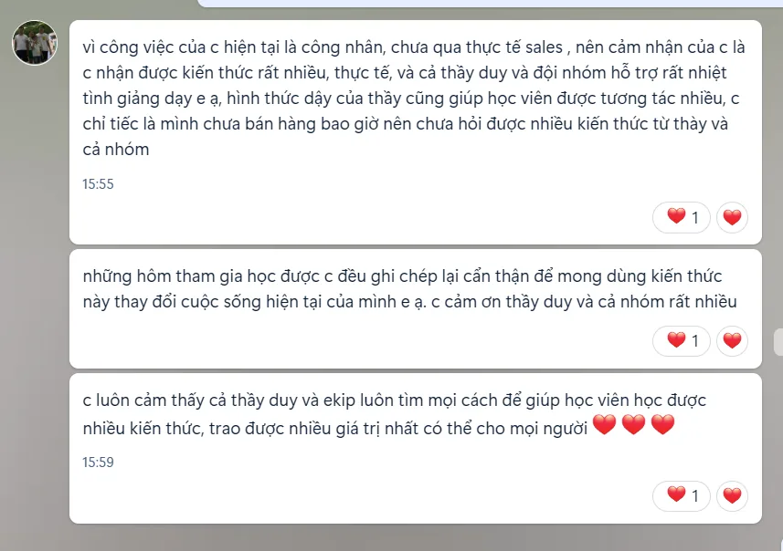

Học viên đã làm khác đi điều gì, và kết quả ra sao
Mỗi câu chuyện dưới đây do học viên kể lại, Duy hỏi lại trực tiếp và đối chiếu với tài liệu gốc trước khi đăng. Đó là chuyện của một người trong một hoàn cảnh cụ thể, nên bạn đọc để xem họ đã đổi điều gì, đừng đọc như lời hứa rằng ai làm cũng ra con số đó.
Người chủ doanh nghiệp
Người chủ kể lại họ đã đổi cách làm ra sao
Duy chỉ đăng chuyện của người chủ đã đồng ý nêu tên và có video hoặc tài liệu gốc đi kèm. Vì vậy phần này sẽ có ít chuyện, và Duy muốn giữ như thế.
Chuyên môn mẫu · Ngành mẫu · 2026
Ô mẫu: câu chuyện của một Founder đặt ở đây
Ô mẫu: video đặt ở đây
Ô này chỉ để xem bố cục. Chưa có tên, lời trích hay con số thật nào được đưa vào.
Khi có câu chuyện đã được học viên đồng ý, đoạn này kể việc người đó đã đổi, theo đúng trình tự đã xảy ra.
Số mẫuKết quả đã xác nhận
Số mẫuThời gian
Số mẫuBối cảnh
Câu trích mẫu, sẽ thay bằng lời học viên nói trong video.
Học viên mẫu
Giới hạn của câu chuyện
Ô mẫu cho phần giới hạn của câu chuyện: trường hợp này đúng trong bối cảnh nào, và chưa chắc lặp lại ở đâu.
Thương hiệu cá nhân của người chủ · Tư vấn tử vi, phong thủy · 2022
Coach Lê Phương bắt đầu từ một chiếc điện thoại, rồi tự thiết kế được sản phẩm đào tạo của mình
Trước năm 2022, Lê Phương đi lên từ số 0. Phương tự tìm trên TikTok và YouTube, đọc và nghe rất nhiều, nhưng ghép kiến thức của nhiều người lại thì vẫn không ra cách làm của riêng mình. Quãng đó tốn nhiều thời gian và tiền.
Điều đổi đầu tiên, theo lời Phương, là cách nghĩ về truyền thông. Không dùng chiêu trò, mà làm từ sự chân thành, trong cách nghĩ, cách tổ chức công việc và cách nói với cộng đồng. Duy đi cùng Phương từ chiến lược truyền thông dài hạn tới cách làm từng video.
Thiết bị lúc đầu chỉ là một chiếc điện thoại. Qua những câu hỏi trong các buổi làm việc, Phương còn tự thiết kế được các sản phẩm đào tạo của mình, điều mà Phương nói trước đó chưa chắc đã nghĩ ra.
Giới hạn của câu chuyện
Video không nêu con số doanh thu, nên trang này cũng không nêu. Kết quả Phương nhắc tới là kênh TikTok và các sản phẩm đào tạo đang bán, bạn có thể tự xem trên kênh của Phương. Video cũng không nói mất bao lâu từ năm 2022 tới lúc có kết quả đó.
Thương hiệu cá nhân của người chủ · Đầu tư và kinh doanh
Master Kris Tran từng sợ máy quay, giờ ngồi nói trước ống kính được
Kris từ nước ngoài trở về, chưa quen cách làm việc ở Việt Nam, và rất sợ mạng xã hội, sợ máy quay. Trước khi tìm tới Duy, Kris đã tìm hiểu rất nhiều người. Kris nói kiến thức thì nhiều người cũng có, điều làm Kris chọn là cách nghĩ và chuẩn làm việc.
Có một chuyện Kris nhắc lại. Điều Kris coi là điểm yếu của mình, Duy chỉ ra đó lại là điểm khác biệt nên khai thác. Lúc khó sắp xếp ý và câu chữ, Kris viết ra giấy trước, rồi thấy mọi thứ dễ sắp xếp hơn hẳn.
Duy cũng giới thiệu Kris với những người cần gặp ở Việt Nam. Kris kể nhờ vậy tiết kiệm được nhiều thời gian và chi phí so với tự dò đường.
Giới hạn của câu chuyện
Kris nói vượt nỗi sợ máy quay chỉ là một việc nhỏ trong những việc đã làm cùng Duy. Video không nêu con số kinh doanh, nên trang này cũng không nêu.
Thương hiệu cá nhân của người chủ
Hoa hậu Kayla Dinh về Việt Nam và cần người hiểu cách làm ăn ở đây
Kayla đang ở Mỹ thì tình cờ thấy Duy trên mạng xã hội. Kayla còn mới với cách làm việc ở Việt Nam, nên muốn tìm một người đi cùng trên đoạn đường đầu.
Về Việt Nam gặp nói chuyện trực tiếp, Kayla thấy hướng đi của mình được giúp khá nhiều, nhất là những điều chưa biết về cách làm kinh doanh ở đây và những mối quen biết cần có. Kayla nói chọn đi cùng lâu dài vì nhóm khách hai bên hướng tới giống nhau.
Giới hạn của câu chuyện
Video ngắn. Kayla kể lý do chọn làm việc cùng Duy, chưa kể kết quả kinh doanh.
Video học viên
Nghe học viên tự nói, không qua lời kể của Duy
Dưới mỗi video có ghi người đó đã nâng chuyên môn nào. Video chỉ tải về khi bạn bấm vào ảnh.
Ô mẫu: video đặt ở đây
Học viên mẫuChuyên môn mẫu · Ngành mẫu · 2026
Câu trích mẫu, sẽ thay bằng lời học viên nói trong video.
TrânKỹ năng tư vấn của người cố vấn tin cậy · Bất động sảnNgọc AnhKỹ năng tư vấn của người cố vấn tin cậy · Bất động sảnMinh HòaKỹ năng tư vấn của người cố vấn tin cậy · Bất động sảnLạc và NgọcKỹ năng tư vấn của người cố vấn tin cậy · Bất động sản
Tin nhắn học viên
Tin nhắn học viên gửi lại cho Duy
Nguyễn Minh Chiến · Bất động sảnĐinh Trang · Bất động sản

Hoàng Lạc · Bất động sản

Trương Tuấn Anh · Bất động sảnTạ Như Lan · Bất động sản

Hoa Kenli · Nội thất

Hoa Kenli · Nội thất

Hoàng YếnChâu

Nguyễn Hằng
Kỹ năng tư vấn
Từ người bán hàng thành người cố vấn khách tin cậy
Những người dưới đây làm tư vấn và bán hàng ở nhiều ngành khác nhau. Điểm chung là họ thôi mở đầu bằng giá và sản phẩm, chuyển sang hỏi để hiểu hoàn cảnh của khách trước khi tư vấn.
Kỹ năng tư vấn của người cố vấn tin cậy · Bất động sản
Hai người bán khác chào giảm 3%, khách vẫn chọn anh Chiến
Người khách của anh Nguyễn Minh Chiến đã đi xem dự án cùng những người bán khác. Họ cũng tư vấn, cũng giới thiệu, nhưng khách không ưng kiểu bán hàng cứ dồn ép liên tục, nên tự tìm và gọi cho anh Chiến để nghe một cách tư vấn khác.
Khách mua để ở, và lúc đó mới biết sơ qua về dự án. Anh Chiến không dồn khách. Anh tìm hiểu khách trước, rồi cho khách thấy khi về đây sinh sống thì mình sẽ có được những gì.
Khách xem xong lúc 7 giờ tối. 7 giờ sáng hôm sau, khách báo đặt cọc. Lúc làm thủ tục, khách mới kể hai người bán kia đã chào giảm 3% cho khách, nhưng khách vẫn chọn làm việc với anh Chiến.
12 giờTừ lúc khách xem xong tới lúc báo cọc
3%Mức hai người bán khác chào giảm cho khách
Giới hạn của câu chuyện
Chuyện này xảy ra với một người khách đã không ưng kiểu bán hàng dồn ép, trong một hoàn cảnh cụ thể. Video không nêu giá trị căn nhà, nên trang này cũng không nêu. Điều bạn nên để ý là cách anh Chiến đặt mình: anh giúp khách tự đưa ra quyết định, chứ không đua giảm giá với người khác.
Kỹ năng tư vấn của người cố vấn tin cậy · Đồng hồ cao cấp
Anh Thức áp dụng ngay sau một ngày thực hành, và hôm sau bán được chiếc đồng hồ hơn 500 triệu
Anh Thức kể trước đây anh tư vấn theo bản năng. Có lúc bán được khách mà chính anh cũng không hiểu vì sao mình làm được, nên cũng khó làm lại lần sau.
Thứ bảy, anh thực hành cùng Duy nguyên một ngày, và áp dụng ngay vào buổi tư vấn ngay hôm đó. Chủ nhật, người khách qua cửa hàng lấy chiếc đồng hồ giá hơn 500 triệu.
Người khách nói với anh rằng họ biết nhiều nơi bán đồng hồ, nhưng quý anh nên ủng hộ anh.
Giới hạn của câu chuyện
Anh Thức đã bán hàng từ trước, theo lời anh là bán theo bản năng. Con số 500 triệu là kết quả của hôm đó, với người khách đó, không phải mức ai thực hành một ngày cũng đạt.
Ba ngành khác
Ở ba ngành khác, người tư vấn cũng bắt đầu bằng việc hiểu khách
Các con số dưới đây do học viên báo lại và Duy đã đối chiếu với tài liệu gốc. Bạn hãy đọc con số cùng với việc họ đã làm khác đi, vì con số đứng một mình không nói lên được điều gì.
Trang Minh Thuận · Ngành đệm~200 triệu / 1 tuần
Thôi mở đầu bằng báo giá và khuyến mãi, chuyển sang hỏi để hiểu khách cần gì trước.
Hồ Thảo · Tài chính~40 triệu / 3 ngày
Thôi giới thiệu tính năng sản phẩm, chuyển sang tìm hiểu hoàn cảnh tài chính của từng khách.
Hoa Kenli · Nội thất2,3 tỷ / 30 ngày
Quay lại làm việc sau thời gian nghỉ sinh, lấy lại chỗ đứng trong công việc và làm video đều đặn.
Cách đọc những con số này
Ba điều Duy giữ khi kể chuyện học viên
Con số nào cũng có nguồn
Mỗi con số do học viên báo lại, Duy hỏi lại trực tiếp và có tài liệu gốc đi kèm. Duy không làm tròn số nào lên cho đẹp.
Kết quả tốt nhất, không phải kết quả thường gặp
Duy chọn những câu chuyện có kết quả tốt nhất để kể. Nếu kể chúng như chuyện ai cũng đạt được thì Duy đang nói sai sự thật với bạn.
Doanh số đến từ việc học viên làm
Học viên đổi một cách làm, rồi áp dụng vào đúng hoàn cảnh của mình. Kết quả là công của họ. Phần của Duy là giúp họ thấy chỗ cần đổi.
Bước tiếp theo
Người Duy thấy đi được xa thường bắt đầu bằng một việc rất nhỏ
Không phải bằng một quyết định lớn. Ba lối dưới đây đều là một việc như vậy, đủ nhỏ để làm xong trong tuần này. Bạn cứ đi chậm cũng được, Duy không giục ai.
Lối 01 · Đi cùng nhau
Vào Cộng đồng Next Gen Founder
Nơi bạn luyện bốn năng lực ngay trong công việc thật, đều đặn, bên cạnh những người hiểu chuyện bạn đang gặp. Điền biểu mẫu hai phút, đội ngũ Next Gen Founder sẽ trao đổi để xem bạn có hợp không. Nếu chưa phải lúc, Duy và đội ngũ sẽ chỉ bạn bước hợp hơn.
Mỗi tuần một lá thư ngắn về một điểm nghẽn thật của người chủ doanh nghiệp, kèm cách Duy nhìn nó và một bước bạn làm được ngay trong tuần. Không quảng cáo, không bán hàng trong thư.
Cảm ơn bạn. Ứng dụng thư vừa mở với nội dung soạn sẵn, bấm Gửi là xong.
Địa chỉ thư chưa đúng. Bạn kiểm tra lại giúp Duy.
Lối 03 · Hỏi thẳng
Liên hệ với Duy
Chưa rõ mình đang kẹt ở đâu thì làm phiếu chẩn đoán bảy phút trước. Muốn mời nói chuyện, hợp tác truyền thông hay hỏi về cố vấn riêng thì vào trang liên hệ, ở đó có đúng bốn cửa.